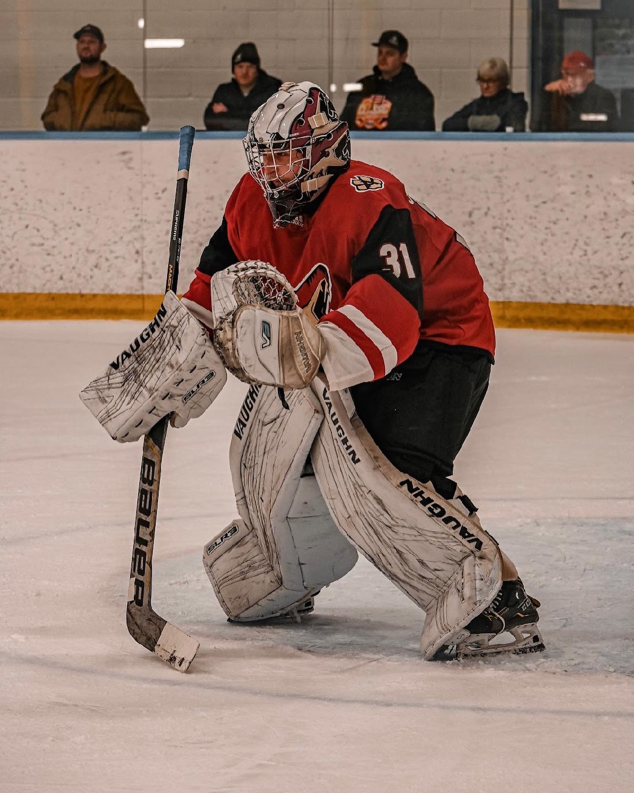
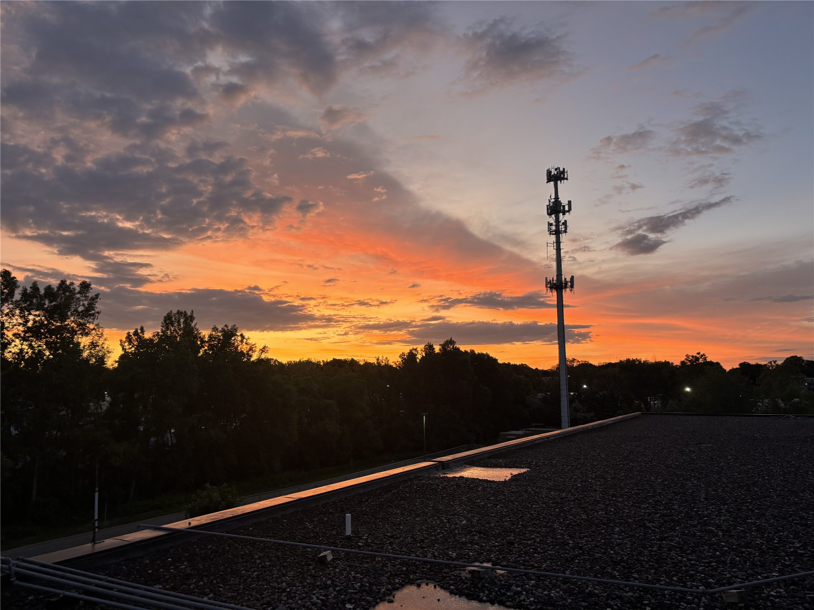
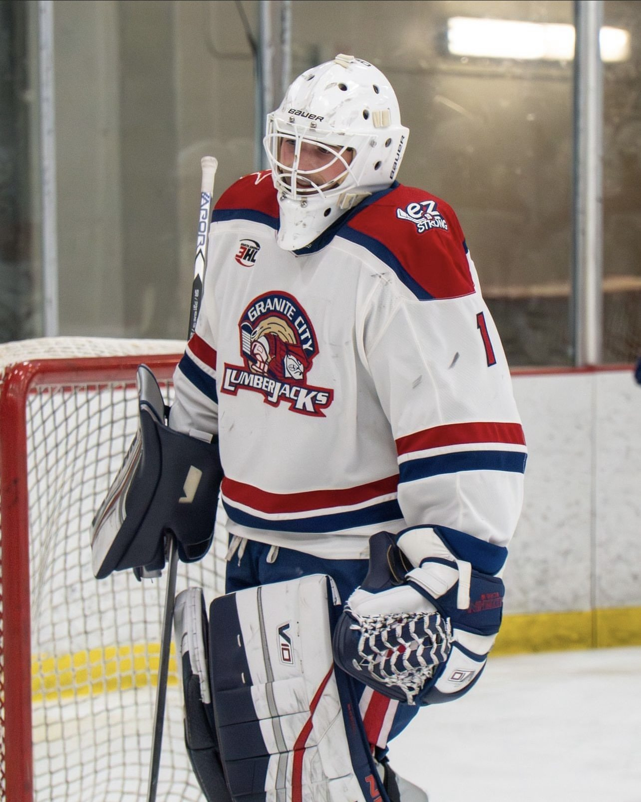
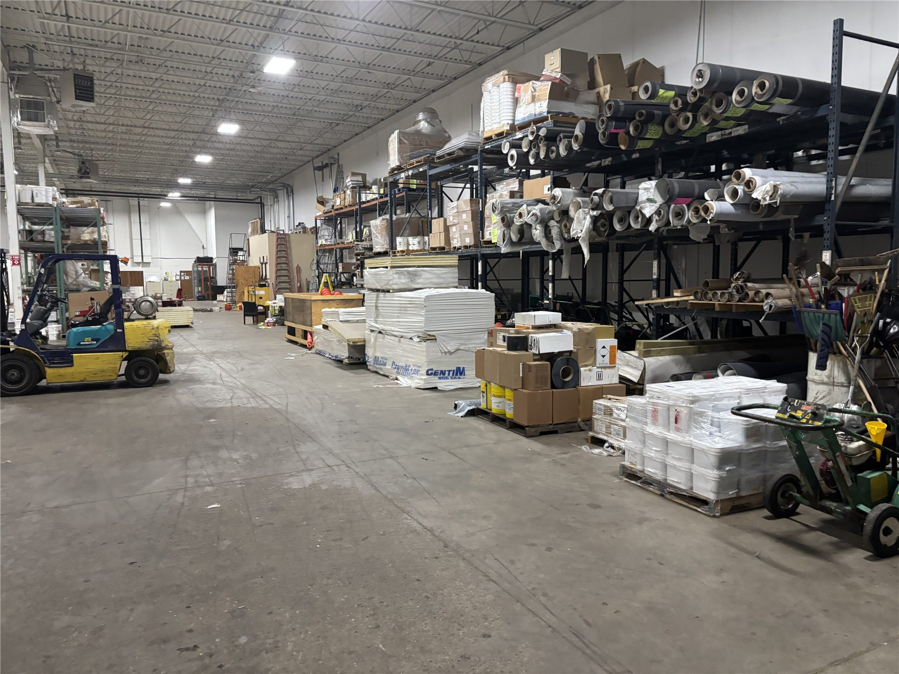
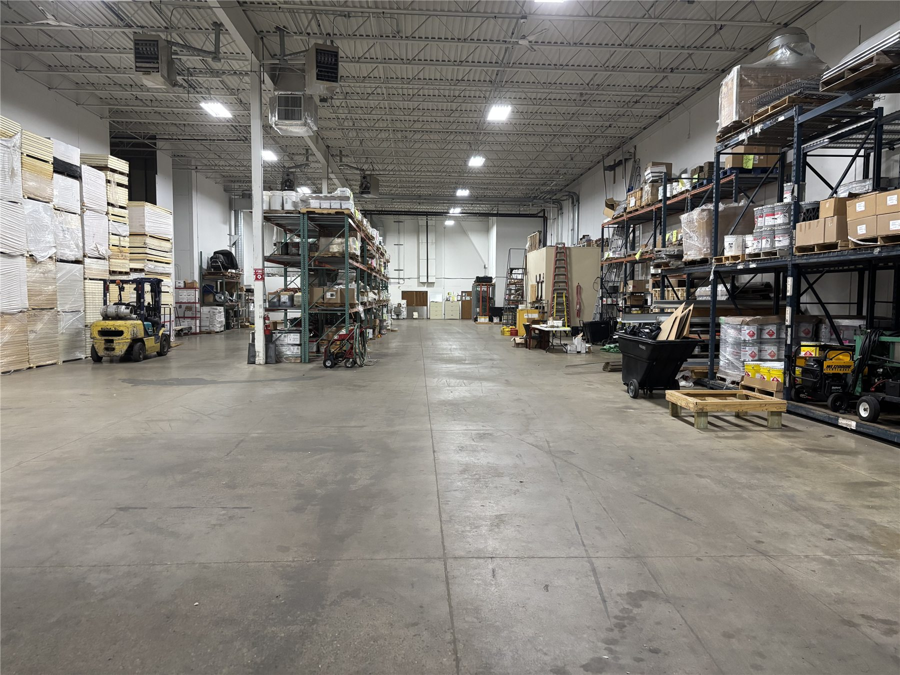
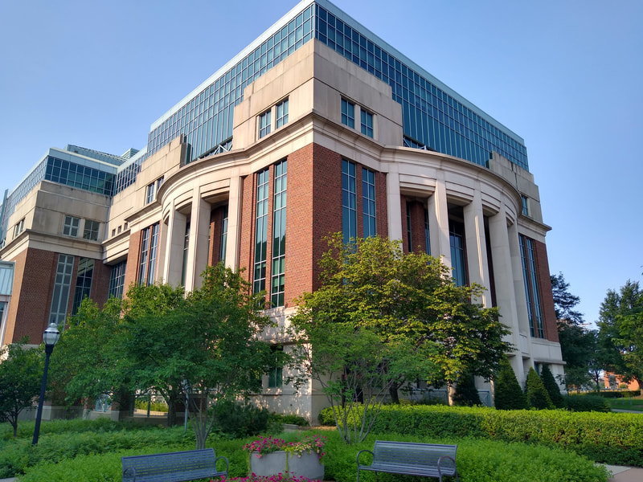

My story
How I Got Here.
I started college a little later than most. Before that I played junior hockey and worked my way up at a roofing company, and those years shaped what I wanted to study and the career I'm building toward.
-
Age 18 · Arizona
On my own in Arizona
After graduating from Eden Prairie High School, where I played varsity hockey, I moved to Arizona at eighteen to play goalie for the Arizona Jr. Coyotes. For eight months I lived on my own, managing my money and keeping a schedule nobody was checking. I made great friends along the way, and I was named team captain.

-
The following summer · CentiMark
5 a.m. to 10 p.m.
I came home and started as a warehouse associate at CentiMark, a national commercial roofing company, while continuing to train. My days were split between work at 5 a.m., training mid-day, and back to work until 10 p.m. That summer built the discipline I still rely on, and it earned me the respect of coworkers twice my age. It was also my first look at what it takes to keep a business moving.

-
Age 19 · St. Cloud
One day at a time
That fall I earned a spot with the Granite City Lumberjacks in St. Cloud, where we won the West Division and took third place in the Fraser Cup. The roster was always changing, which meant I was competing for the starting job every single week. Fighting tooth and nail for that spot taught me perseverance, and the mentality of taking each day one at a time.

-
Later that season
Back to CentiMark
After a concussion, I decided to step away from hockey and return to CentiMark.
-
Age 20 · CentiMark
Running the job
Back at CentiMark, I went from the warehouse floor to coordinating the jobs themselves. I saw how much of a company's results come down to everyday operating choices, and operating became a real passion of mine. When we changed how we ordered material, the warehouse floor cleared and cash came back.

Before
After -
Now · University of Minnesota
Building an education around investing
At CentiMark I got to operate. At Minnesota I've been adding the investor's side: studying Business Economics with a minor in finance, working inside a private equity firm, and helping other students get started. My goal is to carry both into private equity.
